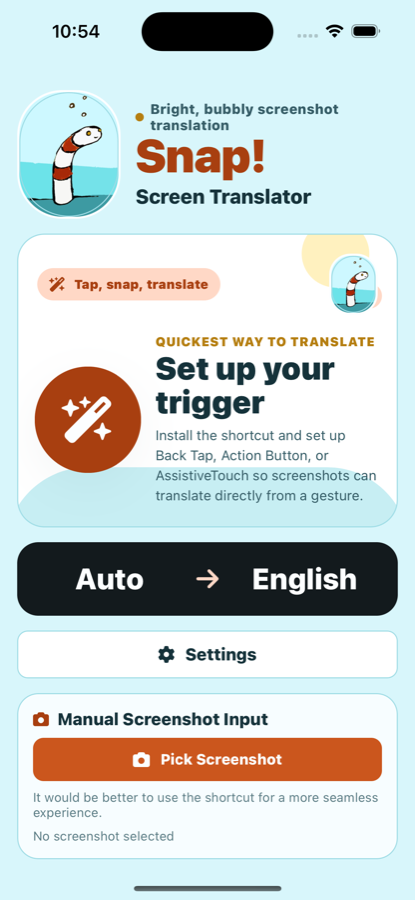
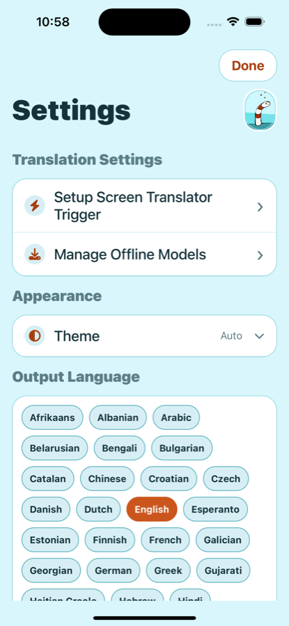
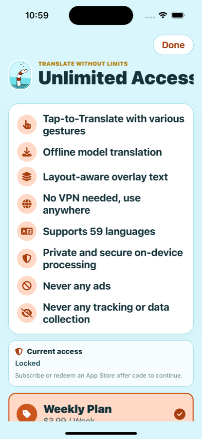

On-device text recognition
The app uses on-device text-recognition frameworks to detect text in images you choose or capture.
Snap! Screen Translator turns a screen capture into a readable translated overlay. Use an iPhone shortcut trigger or the Android floating capture button when text on screen needs a quick second language.


Snap is a focused mobile utility for signs, menus, messages, screenshots, and instructions where preserving the screen layout makes the translation easier to understand.
The app uses on-device text-recognition frameworks to detect text in images you choose or capture.
Choose the target language once, let the source language be detected automatically, and keep common language packs ready for offline use.
Snap places translated text over the original regions, so the result still feels like the screenshot instead of a loose text dump.
Launch translation from Action Button, Back Tap, or AssistiveTouch on iPhone, or from the floating capture button on Android.
Download or remove offline language models from the app, so the translation path is ready when you need it.
The app does not require account creation. The free tier may show interstitial ads at natural breaks; subscribers remove ads while their subscription is active.
The app supports manual screenshot import, an iPhone shortcut workflow, and Android floating capture for moments when you want a translation without switching contexts.
Follow the highlighted steps to set up AssistiveTouch with Single-Tap. Subtitles are available in 12 languages: choose your language in the YouTube player settings.

Snap is built as a utility. Translation use is centered on local processing, with purchases managed by the App Store or Google Play.
The app offers optional weekly, monthly, and yearly auto-renewing plans. Eligible accounts may see a store-managed free trial or introductory offer before confirmation. Restore Purchases is available in the app if access does not update automatically.
These public pages are reachable without an account and are intended for store metadata, in-app legal links, and user support.
Email support, setup guidance, purchase restore help, and offline model troubleshooting.
Open SupportPlain-language explanation of local processing, support email, purchase state, and user choices.
Open Privacy PolicyTerms covering store-managed subscriptions, acceptable use, and translation limitations.
Open TermsSteps for removing local data, offline models, and managing store subscriptions.
Open Privacy ChoicesNo. Normal app use does not require creating a Snap account. Purchases are handled by the App Store or Google Play.
Yes. Only translate screenshots you are comfortable processing on your device, and do not send private screenshots to support unless you choose to include them.
Use the support page or email snapappsupport@gmail.com with your device, platform version, app version, target language, and what happened.